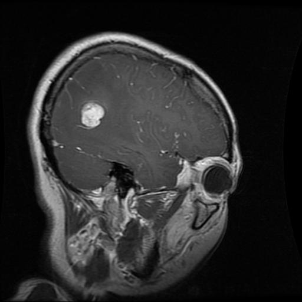
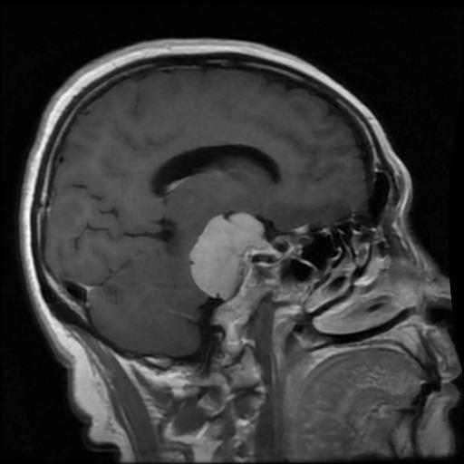
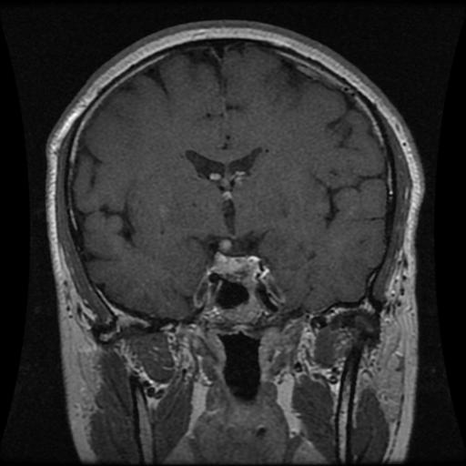
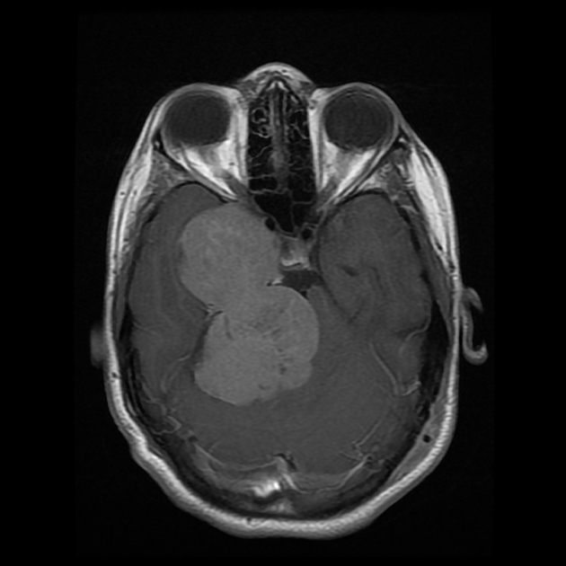
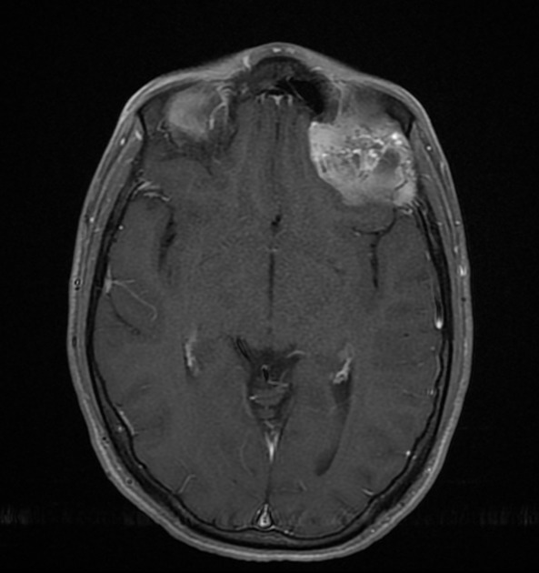
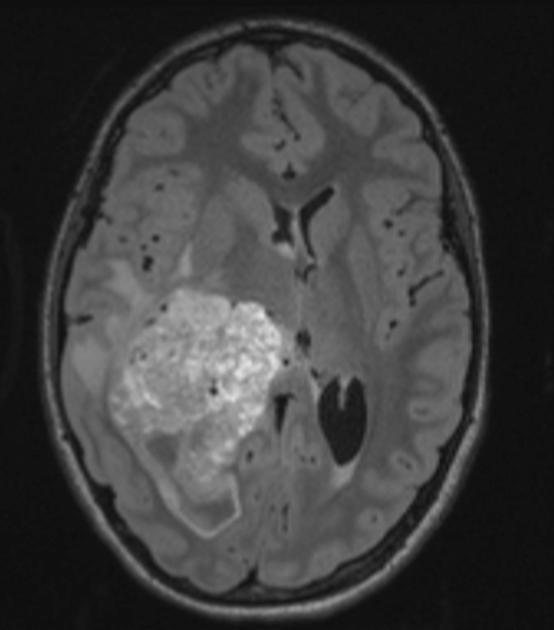
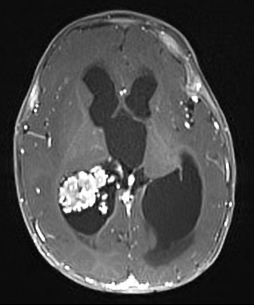
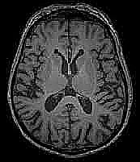

Drag & drop an MRI image here
or click to browse files
What MRIs work best?
This model was trained on brain MRI slices like these. Images matching this style will produce the most accurate results.

Glioma
Meningioma
Pituitary
Schwannoma
Neurocytoma
Carcinoma
Papilloma
No TumorNo MRI handy? Try a sample:
Class Distribution
Architecture
Two-stage hierarchical classification using EfficientNet-B0 models. Stage 1 classifies MRIs into 8 categories (glioma, meningioma, pituitary, schwannoma, neurocytoma, carcinoma, papilloma, and no tumor). When a glioma is detected, Stage 2 identifies the subtype (astrocytoma, glioblastoma, oligodendroglioma, or ependymoma). Both models are fully fine-tuned from ImageNet pretrained weights. On-demand Grad-CAM heatmaps visualize which brain regions the model focused on.
Dataset
Stage 1 is trained on 15,467 MRI images combined from three sources: the Brain Tumor MRI Dataset (Kaggle), the BRISC dataset (axial, sagittal, and coronal orientations), and the 44-class Brain Tumor MRI dataset. Stage 2 is trained on 925 glioma subtype images from the 44-class dataset. Multiple data sources improve generalization across MRI styles and orientations.
Contamination Research
This project includes an ongoing investigation into evaluation contamination in brain tumor MRI benchmarks. Patient-level data leakage (multiple slices per patient split across train/test) inflates reported accuracy by +2.5 pp overall and up to +11.6 pp for specific classes. A clean rebuild with patient-aware splits achieves 96.4% on 4 trustworthy classes, revealing that data1 gliomas have a genuine distributional weakness (86% recall) previously masked by leakage. Source confound was tested and rejected: rare classes scored worst despite maximum confound opportunity. These findings are being developed into a paper: Quantifying Evaluation Contamination in Brain Tumor MRI Classification Benchmarks.
Pipeline
Uploaded images are preprocessed (black border cropping, resize to 224x224, ImageNet normalization) and passed through the Stage 1 model. If classified as glioma, the same preprocessed image is passed through the Stage 2 subtype model. Both outputs include softmax probability distributions with confidence scores for all classes. Grad-CAM heatmaps can be generated on demand to show model attention regions.
Limitations & Methodology Notes
The deployed model uses image-level splits and reports ~95% accuracy. Our clean evaluation with patient-aware splits shows this is inflated. Honest numbers: 96.4% on 4 trustworthy classes (data1+data2), 94.8% extended 8-class. Rare classes (papilloma n=35, carcinoma n=37) have wide confidence intervals. Wilson 95% CIs are computed for all per-class metrics. This is an educational and research tool, not a medical diagnostic device.
Datasets
- Brain Tumor MRI Dataset — 7,023 images (Masoud Nickparvar)
- BRISC 2025 — 6,000 images, multi-orientation (axial, sagittal, coronal)
- Brain Tumor MRI Images 44 Classes — glioma subtypes + additional tumor types (Fernando Feltrin)